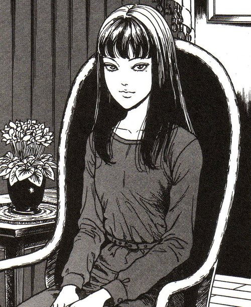
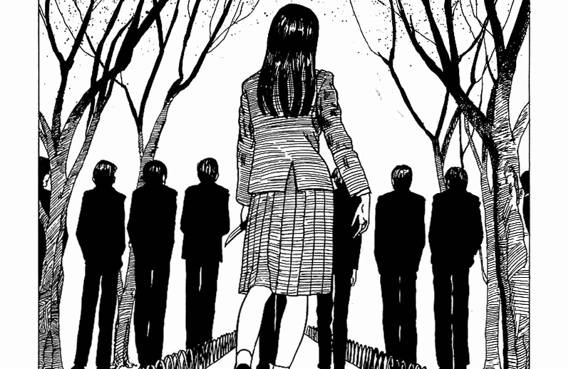

Tomie
Tomie é uma das obras mais icônicas de Junji Ito, publicada pela primeira vez em 1987. A história gira em torno de Tomie Kawakami, uma jovem de beleza absolutamente hipnótica e sobrenatural. Sua presença perturba profundamente qualquer um que a conheça, provocando uma combinação de desejo intenso, inveja e ódio.
No entanto, há algo ainda mais terrível: Tomie é imortal. Mesmo quando é assassinada — frequentemente de maneira brutal por aqueles que se apaixonam ou a odeiam — ela simplesmente se regenera ou se multiplica. Cada fragmento de seu corpo morto pode dar origem a uma nova Tomie.
A narrativa acompanha diferentes episódios e personagens, sempre mostrando como a presença de Tomie leva as pessoas à loucura, ao ciúmes extremo, e à violência irracional. A história se desenrola como uma série de contos interligados, todos mostrando a corrupção dos sentimentos humanos básicos diante de um ideal inatingível de beleza e desejo.
Análise Psicológica: A Obsessão pela Beleza em Tomie
Tomie funciona como uma poderosa metáfora da obsessão patológica pela beleza e pelos ideais inatingíveis que a sociedade impõe. Tomie representa a beleza perfeita — mas uma beleza que, em vez de inspirar admiração pura, gera destruição emocional. Seu charme irresistível faz com que as pessoas percam totalmente o autocontrole, agindo com violência, possessividade, inveja ou loucura. Esse comportamento remete a conceitos da psicologia como: Idealização destrutiva: Tomie é colocada em um pedestal, mas esse ideal se torna tão esmagador que, incapazes de controlá-la ou possuí-la, as pessoas tentam destruí-la. Amor e ódio fusionados: Os sentimentos que ela gera são intensamente ambíguos — admiração e desejo se misturam com raiva e repulsa, uma característica comum em relações abusivas ou obcecadas. Narcisismo: A própria Tomie é uma figura narcisista extrema: ela manipula, seduz e se diverte com o sofrimento que causa, como se precisasse constantemente da adoração dos outros para existir. No mundo real, a história pode ser vista como uma crítica ao culto da beleza: Em sociedades modernas, padrões irreais de beleza são promovidos constantemente pela mídia, criando obsessão e sofrimento. Muitas pessoas se veem presas em ciclos autodestrutivos de comparação, inveja, autoimagem distorcida (como no transtorno dismórfico corporal) e até violência psicológica — exatamente como acontece com quem cruza o caminho de Tomie. Além disso, a imortalidade de Tomie reflete como esses padrões de beleza são perpetuados de geração em geração, sobrevivendo a qualquer tentativa de mudança ou destruição.